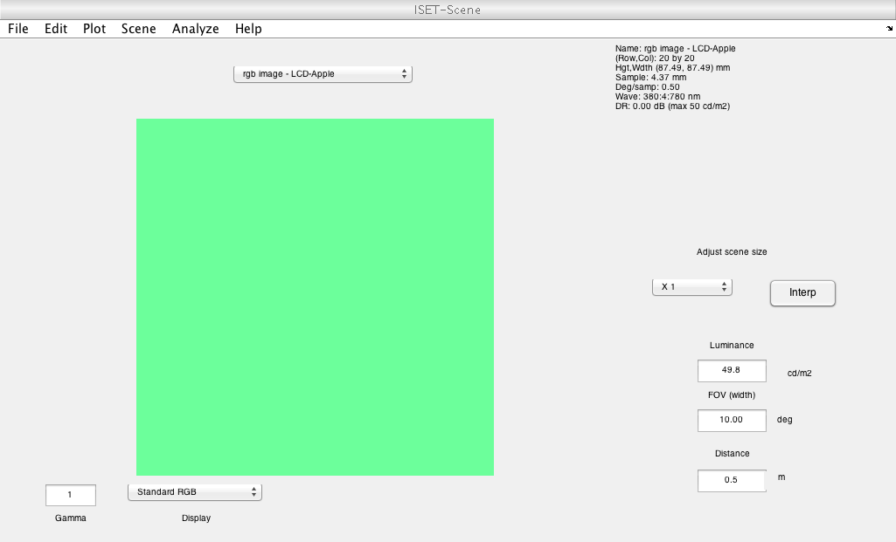
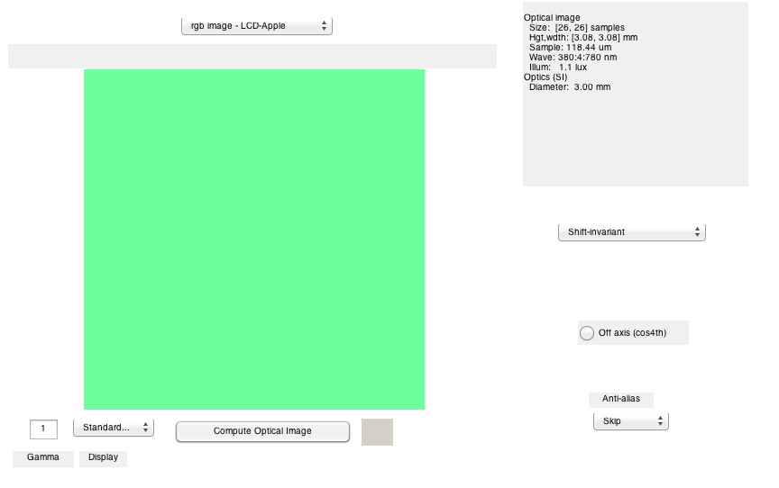
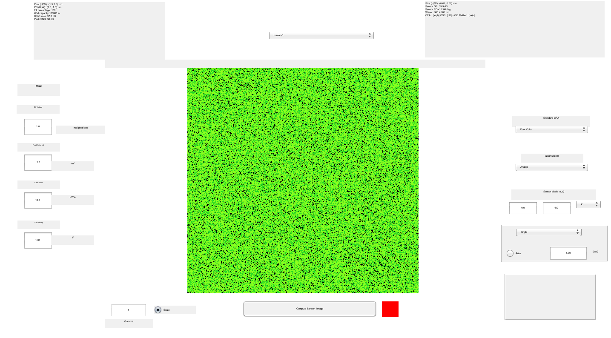
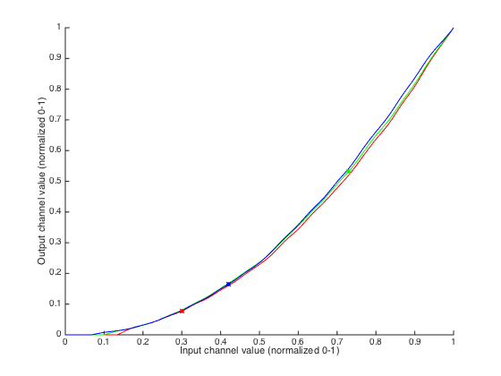
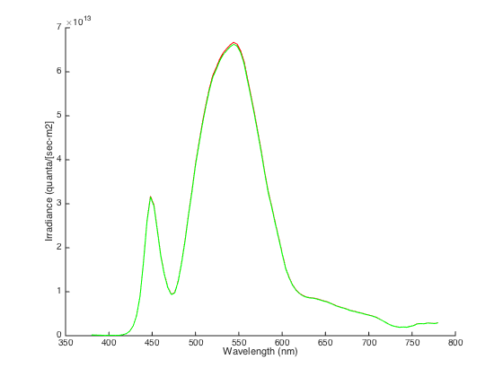

Contents
- Function implementing the isetbio validation code
- Initialize ISET
- Some informative text
- Remove the Brainard lab PTB overrides folder from the path
- Overview
- Create isetbio display
- Create a uniform field radiance image in ISETBIO
- Compute optial image, for delta function optics.
- Compute sensor image
- Get the LMS isomerization rates out of the sensor image
- Get cone fundamentals that ISETBIO is using, for use with PTB routines.
- Create PTB calibration structure from ISETBIO display object
- Initialize PTB calibration structure.
- Compare PTB and ISETBIO LUT inversion
- Easy to check if PTB LUT inversion is invertible
- Compare irradiance in optical image with that computed directly from the primaries
- PTB conversion to isomerization rates
- Compare the two methods.
- Restore original path
- Save validation operations
- Plot
function varargout = v_DisplayColorConversion(varargin) % % Validate display calibration color conversion against PTB. Oddly enough, % this also does some checking of LUT inversion. % % ISETBIO and PTB agree well on this calculation. % % See also v_IrradianceIsomerizations, v_DisplayLUTInversion varargout = UnitTest.runValidationRun(@ValidationFunction, nargout, varargin); end
Function implementing the isetbio validation code
function ValidationFunction(runTimeParams)
Initialize ISET
close all; ieInit;
Some informative text
UnitTest.validationRecord('SIMPLE_MESSAGE', 'Compare isetbio and PTB display color conversion.');
Remove the Brainard lab PTB overrides folder from the path
This prevents this code from using the new BL object oriented PTB overrides. We could include these inside of isetbio, but the risk is that whether this program worked or not would depend on whether isetbio was before or after PTB on the user's path, something we don't want to have to deal with. Elsewhere (not in isetbio), we have established that the PTB and BrainardLab routines do the same thing (which is not surprising, as the actual calculations are done by the same underlying code in each case, just accessed differently.)
%[removedFolderFromCurrentPath, originalPath] = removeBrainardLabPTBOverrides(); % new script (is there an other one, here ?) try
Overview
What we are going to do in this script is to create uniform field corresponding to specified display and rgb values and pump it through isetbio to get cone isomerization rates. Then we are going to do the calculation for the same display, cone fundamentals, and rgb values in PTB. We start with the isetbio calculation.
Create isetbio display
displayToTest = 'LCD-Apple'; d = displayCreate(displayToTest); gammaTable = displayGet(d, 'gamma table'); if (size(gammaTable,2) ~= 3) error('Cannot deal with a display that has other than 3 primaries for this test.'); end nInputLevels = size(gammaTable,1);
Create a uniform field radiance image in ISETBIO
Use the display object and the passed RGB values.
The assumption here is that isetbio uses the display depth to figure out how to convert integers to the right input for gamma correction.
ISETBIO displays work with integer display inputs, which makes the bit depth explicit but which require that you keep track of the bit depth carefully.
PTB works in a world where displays are driven with [0-1] real numbers -- this is how OpenGL works, with the display driver responsible for digitizing. This keeps the code very portable but does make it hard to know the bit depth.
Choose RGB values in the range where the different gamma correction methods used by ISETBIO and PTB agree (see v_DisplayLUTInversion).
RGBToTest = [0.3 0.73 0.42]';
%RGBToTest = [1 1 1]';
theRGBImage = ones(20,20,3);
for i1 = 1:3
theRGBImage(:,:,i1) = round((nInputLevels-1)*RGBToTest(i1));
end
sceneDegrees = 10; % need large field
scene = sceneFromFile(theRGBImage,'rgb',[],d);
scene = sceneSet(scene,'fov', sceneDegrees);
sceneSize = sceneGet(scene,'size');
if (runTimeParams.generatePlots)
vcAddAndSelectObject(scene); sceneWindow;
end
 Compute optial image, for delta function optics.
oi = oiCreate('human'); optics = oiGet(oi,'optics'); optics = opticsSet(optics,'off axis method','skip'); optics = opticsSet(optics,'otf method','skip otf'); oi = oiSet(oi,'optics',optics); oi = oiCompute(scene,oi); oi = oiSet(oi,'fov',sceneDegrees); if (runTimeParams.generatePlots) vcAddAndSelectObject(oi); oiWindow; end
Compute sensor image
Integration time is set to 1 second, so this comes out as isomserizations per second. The run without photon/shot noise, so that the comparison will not be stochastic.
sensorDegrees = 2;
roiPixels = 10;
sensor = sensorCreate('human');
sensor = sensorSet(sensor,'wave',displayGet(d,'wave'));
sensor = sensorSet(sensor, 'noise flag', 0);
sensor = sensorSet(sensor,'exp time',1);
sensor = sensorSet(sensor,'rows',128);
sensor = sensorSet(sensor,'cols',128);
[sensor, ~] = sensorSetSizeToFOV(sensor,sensorDegrees,scene,oi);
sensor = sensorCompute(sensor,oi);
if (runTimeParams.generatePlots)
vcAddAndSelectObject(sensor); sensorWindow('scale',1);
end
 Get the LMS isomerization rates out of the sensor image
Pull out responses of each cone type within ROI. I am doing this by brute force, because I can't find quite the right combination of ROI gets from the sensor image.
isetbioIsomerizationsArray = sensorGet(sensor,'photons'); sensorCFA = sensorGet(sensor,'cfa'); sensorSizePixels = sensorGet(sensor,'size'); rect = round([sensorSizePixels(2)/2,sensorSizePixels(1)/2,roiPixels,roiPixels]); sensorRoiLocs = ieRoi2Locs(rect); nLocs = size(sensorRoiLocs,1); sumIsomerizations = zeros(3,1); nSummed = zeros(3,1); for jj = 1:nLocs % A type of 1 in the CFA is blank, so we subtract 1 from the number % in the CFA and skip any that end up as 0. This is just one of % those things about ISETBIO that you have to know. coneType = sensorCFA.pattern(sensorRoiLocs(jj,1),sensorRoiLocs(jj,2))-1; if (coneType > 0) sumIsomerizations(coneType) = sumIsomerizations(coneType)+isetbioIsomerizationsArray(sensorRoiLocs(jj,1),sensorRoiLocs(jj,2)); nSummed(coneType) = nSummed(coneType) + 1; end end isetbioLMSIsomerizations = sumIsomerizations ./ nSummed;
Get cone fundamentals that ISETBIO is using, for use with PTB routines.
Get cone fundamentals out of isetbio sensor. We keep these as quantal efficiencies, because it is easier to think about how light produces isomerizations if we work in quantal units.
S_cones = WlsToS(sensorGet(sensor,'wave')); T_conesQE = sensorGet(sensor,'spectral qe')'; T_conesQE = T_conesQE(2:4,:);
Create PTB calibration structure from ISETBIO display object
Specify parameters. Screen dot pitch and pixel size have no effect on this comparison, but we make something up just to remind us of how to do this in the display to cal conversion should we ever be looking here to figure it out.
wave = displayGet(d, 'wave'); isetbioPrimarySpdRadianceEnergy = displayGet(d, 'spd primaries'); dotsPerMeter = displayGet(d, 'dots per meter'); screenSizeInPixels = [1920 1080]; % Convert primaries from radiance to retinal irradiance % Adjust for difference in isetbio and PTB wavelength sampling % conventions, and take assume pupil size into account. % % I believe the area units here are meters^2, as that tends to % be the ISETBIO default. pupilDiameterMeters = opticsGet(optics,'pupil diameter','m'); pupilAreaMeters2 = pi*(pupilDiameterMeters/2)^2; eyeLengthMeters = opticsGet(optics,'focal length','m'); ptbPrimarySpdIrradianceEnergy = RadianceAndPupilAreaEyeLengthToRetIrradiance(isetbioPrimarySpdRadianceEnergy,WlsToS(wave),pupilAreaMeters2,eyeLengthMeters); ptbPrimarySpdIrradianceEnergy = ptbPrimarySpdIrradianceEnergy*(wave(2)-wave(1)); ptbPrimarySpdIrradiancePhotons = EnergyToQuanta(SToWls(wave),ptbPrimarySpdIrradianceEnergy); % Correct for differences in the way visual angle is computed in % ISETBIO versus PTB. See v_IrradianceIsomerizations for (a little) % more on this point. m = opticsGet(optics,'magnification',sceneGet(scene,'distance')); ptbPrimarySpdMagCorrectIrradiancePhotons = ptbPrimarySpdIrradiancePhotons/(1+abs(m))^2; % Put into PTB cal structure PTBcal = ptb.GeneratePsychToolboxCalStruct(... 'name', displayGet(d, 'name'), ... 'gammaTable', gammaTable, ... 'wave', wave, ... 'spd', ptbPrimarySpdMagCorrectIrradiancePhotons, ... 'screenSizeInPixels', screenSizeInPixels, ... 'dotsPerMeter', dotsPerMeter ... ); % Kluge. Should set this properly in creation routine. It might even % be possible to do so, I'm not sure and the documentation in the % function is not clear on what the options are (as there is no % documentation at all, sigh.) PTBcal.P_ambient = zeros(length(wave),1);
Initialize PTB calibration structure.
PTBcal = CalibrateFitGamma(PTBcal, nInputLevels);
gammaMethod = 1;
PTBcal = SetGammaMethod(PTBcal, gammaMethod, nInputLevels);
PTBcal = SetSensorColorSpace(PTBcal,T_conesQE,S_cones);
Fitting with linear interpolation
Compare PTB and ISETBIO LUT inversion
These agree well, and match up with the plotted gamma table
ptbRGBToTestPrimary = SettingsToPrimary(PTBcal,RGBToTest);
isetbioRGBToTestPrimary = ieLUTDigital(theRGBImage(1,1,:),gammaTable);
xVals = linspace(0,1,size(gammaTable,1))';
if (runTimeParams.generatePlots)
figure; hold on;
plot(xVals,gammaTable(:,1),'r');
plot(xVals,gammaTable(:,2),'g');
plot(xVals,gammaTable(:,3),'b');
plot([RGBToTest(1)],[ptbRGBToTestPrimary(1)],'ro','MarkerSize',4,'MarkerFaceColor','r');
plot([RGBToTest(1)],[isetbioRGBToTestPrimary(1)],'rx','MarkerSize',6,'MarkerFaceColor','r');
plot([RGBToTest(2)],[ptbRGBToTestPrimary(2)],'go','MarkerSize',4,'MarkerFaceColor','g');
plot([RGBToTest(2)],[isetbioRGBToTestPrimary(2)],'gx','MarkerSize',6,'MarkerFaceColor','g');
plot([RGBToTest(3)],[ptbRGBToTestPrimary(3)],'bo','MarkerSize',4,'MarkerFaceColor','b');
plot([RGBToTest(3)],[isetbioRGBToTestPrimary(3)],'bx','MarkerSize',6,'MarkerFaceColor','b');
xlabel('Input channel value (normalized 0-1)');
ylabel('Output channel value (normalized 0-1)');
end
tolerance = 0.001;
UnitTest.assertIsZero(abs(ptbRGBToTestPrimary(1)-isetbioRGBToTestPrimary(1)),'Red inversion comparison',tolerance);
UnitTest.assertIsZero(abs(ptbRGBToTestPrimary(2)-isetbioRGBToTestPrimary(2)),'Green inversion comparison',tolerance);
UnitTest.assertIsZero(abs(ptbRGBToTestPrimary(3)-isetbioRGBToTestPrimary(3)),'Blue inversion comparison',tolerance);
 Easy to check if PTB LUT inversion is invertible
ptbRGBToTestCheck = PrimaryToSettings(PTBcal,ptbRGBToTestPrimary);
tolerance = 0.001;
UnitTest.assertIsZero(abs(ptbRGBToTestCheck(1)-RGBToTest(1)),'PTB red settings->primary->settings check',tolerance);
UnitTest.assertIsZero(abs(ptbRGBToTestCheck(2)-RGBToTest(2)),'PTB green settings->primary->settings check',tolerance);
UnitTest.assertIsZero(abs(ptbRGBToTestCheck(3)-RGBToTest(3)),'PTB blue settings->primary->settings check',tolerance);
Compare irradiance in optical image with that computed directly from the primaries
First grab irradiance out of the optical image. Then construct spd using the primaries above and the PTB primary settings, obtained above using PTB lut inversion.
rect = [sceneSize(2)/2,sceneSize(1)/2,roiPixels,roiPixels];
roiRoiLocs = ieRoi2Locs(rect);
isetbioIrradianceSpdPhotons = oiGet(oi,'roi mean photons', roiRoiLocs);
ptbIrradianceSpdPhotons = ptbPrimarySpdMagCorrectIrradiancePhotons*ptbRGBToTestPrimary;
if (runTimeParams.generatePlots)
figure; clf; hold on;
plot(wave,ptbIrradianceSpdPhotons./(wave(2)-wave(1)),'r');
plot(wave,isetbioIrradianceSpdPhotons,'g');
xlabel('Wavelength (nm)');
ylabel('Irradiance (quanta/[sec-m2]');
end
 PTB conversion to isomerization rates
This gives isomerization rates for a cone with a collecting area of one square meter.
ptbLMSIsomerizationsRaw = SettingsToSensor(PTBcal,RGBToTest);
% Adjust by cone size used in isetbio
pixel = sensorGet(sensor,'pixel');
sensorHeight = pixelGet(pixel,'height');
sensorWidth = pixelGet(pixel,'width');
sensorArea = sensorHeight*sensorWidth;
ptbLMSIsomerizations = sensorArea*ptbLMSIsomerizationsRaw;
Compare the two methods.
Agreement is better than 1%
isomerizationRatios = ptbLMSIsomerizations ./ isetbioLMSIsomerizations;
fprintf('PTB/ISETBIO LMS isomerization ratios: %0.3f, %0.3f, %0.3f\n',isomerizationRatios(1),isomerizationRatios(2),isomerizationRatios(3));
tolerance = 0.01;
UnitTest.assertIsZero(abs(isomerizationRatios(1)-1),'L isomerization comparison',tolerance);
UnitTest.assertIsZero(abs(isomerizationRatios(2)-1),'M isomerization comparison',tolerance);
UnitTest.assertIsZero(abs(isomerizationRatios(3)-1),'S isomerization comparison',tolerance);
% Log the data
dataStruct = struct( ...
'ptbIrradianceSpdPhotons',ptbIrradianceSpdPhotons, ...
'isetbioIrradianceSpdPhotons',isetbioIrradianceSpdPhotons, ...
'RGBToTest',RGBToTest, ...
'ptbRGBToTestPrimary',ptbRGBToTestPrimary, ...
'ptbRGBToTestCheck',ptbRGBToTestCheck, ...
'isetbioRGBToTestPrimary',isetbioRGBToTestPrimary, ...
'ptbLMSIsomerizations', ptbLMSIsomerizations, ...
'isetbioLMSIsomerizations', isetbioLMSIsomerizations ...
);
PTB/ISETBIO LMS isomerization ratios: 1.007, 1.007, 1.009
catch err % Restore original path and rethrow error if (~isempty(removedFolderFromCurrentPath)) path(originalPath); end rethrow(err); end
Restore original path
%if (~isempty(removedFolderFromCurrentPath)) % path(originalPath); %end
Save validation operations
UnitTest.validationData('conversionData', dataStruct);
Plot
if (runTimeParams.generatePlots) end
end % Helper method to remove the BrainardLabPTBOverrides folder if it exists on the current path. % We want to remove this override, so we can use the original PTB functions % without the CalStructOBJ (which is found only on our computers). function [removedFolderFromCurrentPath, originalPath] = removeBrainardLabPTBOverrides removedFolderFromCurrentPath = ''; originalPath = path; % Folder to remove the Overrides/PTB-3 folder from the current path, if the folder exists on the path PTBoverridesDirToRemoveFromPath = '/Users/Shared/Matlab/Toolboxes/BrainardLabToolbox/Overrides/PTB-3'; % determine if the PTBoverridesDirToRemoveFromPath is in the current path, % and if it is remove it. pathCell = regexp(path, pathsep, 'split'); for k = 1:numel(pathCell) % fprintf('[%d] = %s\n', k, pathCell{k}); if (strncmpi(pathCell{k}, PTBoverridesDirToRemoveFromPath, numel(PTBoverridesDirToRemoveFromPath))) rmpath(pathCell{k}); removedFolderFromCurrentPath{numel(removedFolderFromCurrentPath)+1} = pathCell{k}; fprintf('Found ''%s'' path in entry %d. Removing it from the path.\n', pathCell{k},k); end end end